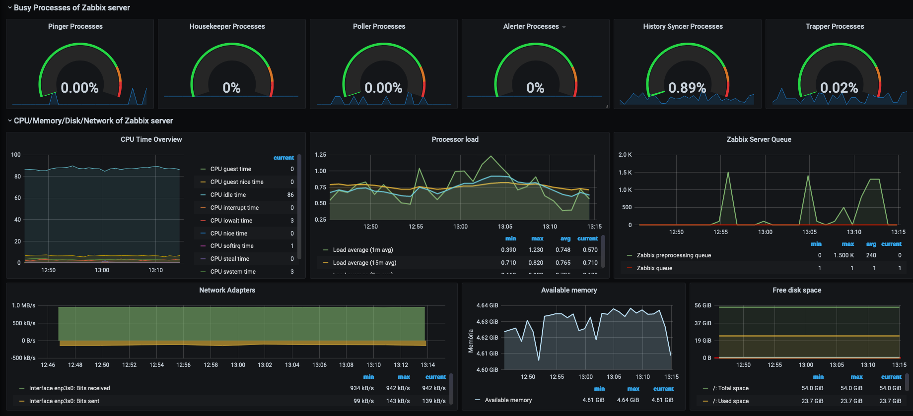
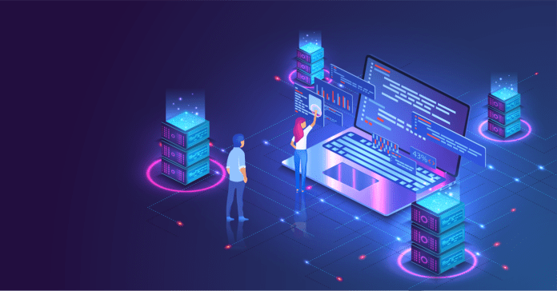
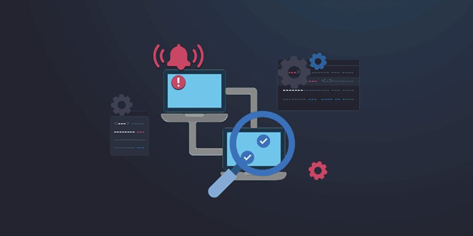
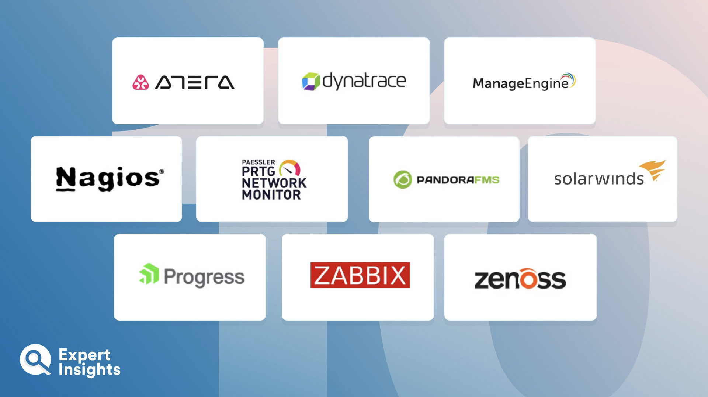
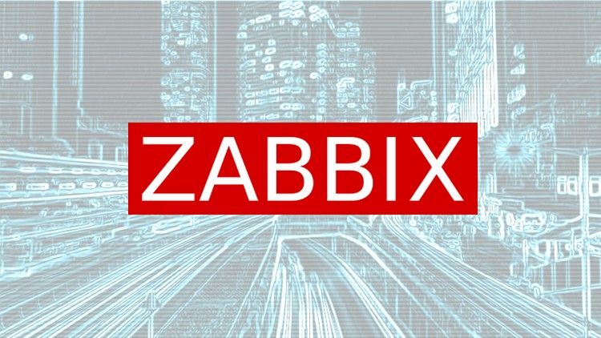
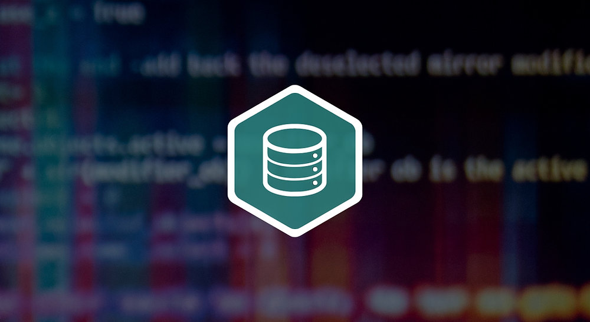
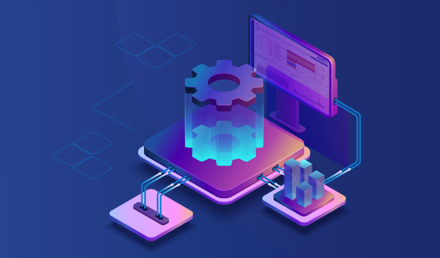
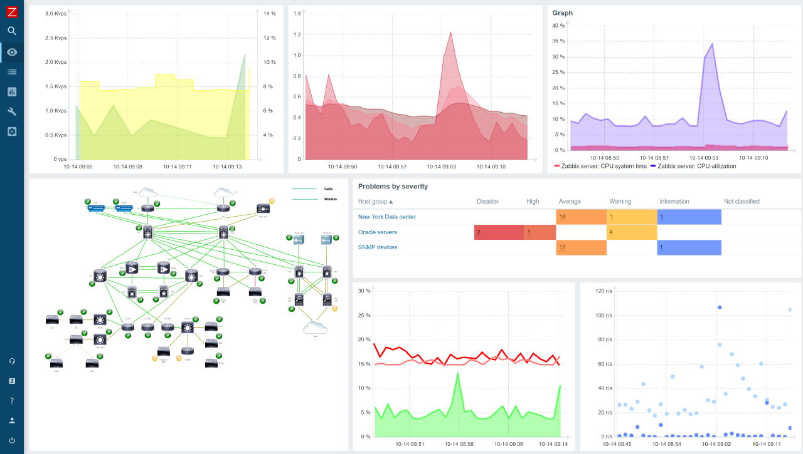

Informacion Sobre
Informacion Sobre
Procesos De Innovacion Y
Procesos De Innovacion Y
Informacion Sobre
Procesos De Innovacion Y
Monitoreo De Los Centros De Datos
Procesos De Innovacion Y
Monitoreo De Los Centros De Datos
Pasos para el proceso de innovacion y Monitoreo de los centros de datos.
¿Que es una herramienta de monitoreo y sus funcionalidades?
¿Que es una herramienta de monitoreo y sus funcionalidades?
Una herramienta de monitoreo de centro de datos es una solución de software o hardware diseñada específicamente para supervisar y gestionar los componentes y recursos de un centro de datos y monitorearla.
Buscar herramientas de monitoreo 'DCIM', una herramienta de monitoreo
Buscar herramientas de monitoreo 'DCIM', una herramienta de monitoreo
Semejante a los ERP hace más de una década, los DCIM tendrán un gran imapacto en los próximos años, y su costo y tiempo de implementación será elevado. Pocas empresas lo tendran.
Monitoreo y procedimientos
Monitoreo y procedimientos
Al seleccionar este tipo de herramienta, se debe evaluar que brinde visibilidad sobre el estado del centro de datos; que minimice la interrupción del servicio y que disminuya el tiempo.
¿Para qué nos sirve un sistema de monitoreo?
¿Para qué nos sirve un sistema de monitoreo?
Brindan protección mediante la medición y detección de variables como: Temperatura. Humedad. Derrames de líquidos/condensación y otras funcionalidades de suma importancia y necesarias.
¿Cual es el beneficio de usar una herramienta de código abierto?
¿Cual es el beneficio de usar una herramienta de código abierto?
Las herramientas de monitoreo de red de código abierto incluyen asistentes de configuración e interfaces gráficas de usuario basadas en web que facilitan la implementación y su uso.
Existen distintas herramientas de monitoreo ¿cuales y ver cuál es su principal función?
Existen distintas herramientas de monitoreo ¿cuales y ver cuál es su principal función?
Existen infinidades de herramientas de codigo abierto y de pago las que consideramos que son las mas sobresalientes son aquellas herramientas tales como: Nagios, Zabbix, Pandora FMS, Zenoss.
Decidir cuál herramienta nos puede ayudar en lo que necesitamos
Decidir cuál herramienta nos puede ayudar en lo que necesitamos
En nuestro caso estaremos usando zabbix ya que él cuenta con la función de monitorear ey escanear la red completa y también cuenta con la función de verificar los estados de los servidores.
Evaluacion Sobre
Evaluacion Sobre
Tecnologias Emergentes Para
Evaluacion Sobre
Tecnologias Emergentes Para
El Monitoreo De Los Centros De Datos
Tecnologias emergentes para el monitoreo de centros de datos en el futuro
Virtualización de servidores
Virtualización de servidores
Con el objetivo de reducir las cargas de infraestructura, muchos proveedores de servicios gestionados (MSP), así como centros de datos, están migrando a centros de datos definidos por software.
Computación de borde
Computación de borde
Edge Computing es una arquitectura que aprovecha el poder de procesamiento de dispositivos en la periferia de la red para resolver tareas y peticiones, siendo más eficiente que el procesamiento centralizado.
Nube híbrida
Nube híbrida
Para obtener lo mejor de la nube pública y privada, cada vez más empresas están adoptando implementaciones de nube híbrida. La nube privada ofrece excelente control y seguridad, que la publica.
Inteligencia artificial (IA)
Inteligencia artificial (IA)
Ninguna otra tecnología impacta tanto la eficiencia de un centro de datos como la Inteligencia Artificial (IA). Los sofisticados programas de IA optimizan el rendimiento de un centro de datos.
Automatización
Automatización
Los tiempos sin precedentes como la pandemia de COVID-19 han acelerado la adopción de procesos automatizados y gestión remota. La resolución de problemas de las ineficiencias de la red.
Monitoreo inteligente
Monitoreo inteligente
La monitorización inteligente es otra tendencia que sólo verá crecer en el futuro. Las empresas han comenzado a utilizar métodos de seguimiento inteligentes, y automatizados.
Centros de datos de hiperescala
Centros de datos de hiperescala
Con volúmenes cada vez mayores de datos que manejar, los centros de datos se están volviendo exponencialmente escalables. Los centros de datos que pueden ampliarse rápidamente.
Red 5G
Red 5G
La quinta generación de la red de comunicaciones móviles, popularmente llamada 5G, por fin es una realidad. Los albores del 5G facilitarán velocidades rápidas y un acceso más rápido.
Seguridad a nivel de chip
Seguridad a nivel de chip
La disponibilidad de Internet ha aumentado las preocupaciones de seguridad debido a los ataques cibernéticos. Empresas buscan soluciones innovadoras para proteger centros de datos, como Google ofrece seguridad a nivel de chip.
Centro de datos ecológico
Centro de datos ecológico
Un centro de datos eficiente con el medio ambiente se conoce como centro de datos ecológico. las grandes empresas buscan soluciones sostenibles y se integran en la revolución de la energía verde en apoyo a la resiliencia climática.
Informe Sobre procedimientos
Informe Sobre procedimientos
de monitoreo y automatizacion
de monitoreo y automatizacion
Informe Sobre procedimientos
de monitoreo y automatizacion
de un centro de datos con zabbix
de monitoreo y automatizacion
de un centro de datos con zabbix
Monitoreo y automatizacion con zabbix

Introducción
Introducción
La gestión eficiente de un centro de datos es esencial para la disponibilidad y seguridad. Este informe se enfoca en el monitoreo y la automatización con Zabbix, conocida por su supervisión de infraestructuras y aplicaciones.
Configuración Inicial
Configuración Inicial
Antes de usar Zabbix para monitorear un centro de datos, debes hacer una configuración inicial. Esto involucra instalar Zabbix Server y Zabbix Agent en los sistemas a monitorear, configurar hosts, grupos de hosts, plantillas etc.
Servidores
Servidores
Supervisión del rendimiento, utilización de CPU, memoria RAM, almacenamiento, etc Y toda su infraestructura Monitoreada con zabbix Para el correcto funcionamiento optimo de toda su infraestructura en los servidores.

Redes
Redes
Seguimiento del tráfico de red, latencia, errores y disponibilidad de dispositivos de red Incluso los dispositivos que esten conectados a la red puede ser monitoreado automaticamente pór zabbix y alertar sobre anomalias.

Almacenamiento
Almacenamiento
Control de la capacidad de almacenamiento, uso de discos y rendimiento del almacenamiento. y cantidad de informacion guardada asi mismo alertar cuando el espacio en disco este a punto de llenarse.

Energía
Energía
Monitoreo de consumo de energía y temperatura de los dispositivos de climatización y alimentación para asi saber en que momento un dispositivo puede sufrir de un sobrecalentamiento y asi generar daños en el dispositivo.
Bases de Datos
Bases de Datos
Supervisión de bases de datos SQL, como MySQL o PostgreSQL, para evaluar el rendimiento y la disponibilidad de las bases de datos tambien se evalua todo lo malo que pueda ocurrir en las bases de datos y asi solucionarlo.
Servicios Web
Servicios Web
Seguimiento de servicios web para asegurarse de que estén disponibles y respondiendo adecuadamente todos los servicios en la web y asegurarse en cualquier si llega a surgir una caida o algun tipo de ataque.

Aplicaciones Personalizadas
Aplicaciones Personalizadas
Desarrollo de scripts y plantillas personalizadas para monitorear aplicaciones específicas por ejemplo se podria hacer un script que monitoree los servicios ejecutandose actualmente o en segundo plano.
Detección de Intrusiones
Detección de Intrusiones
Implementación de reglas de detección de intrusiones para la identificación de actividades maliciosas y asi prevenir toda accion y actividad de indole ilegal y perjudicial y tomar medidas necesarias si eso llegara a ocurrir.
Registros de Eventos de Seguridad
Registros de Eventos de Seguridad
Monitoreo de registros de eventos de seguridad para alertar sobre acciones sospechosas o cualquier ataque informatico o asi como robo de informacion o fraudes por eso es importantes estar en constante revision de alertas.
Automatización con Zabbix
Automatización con Zabbix
Zabbix no solo ofrece capacidades de monitoreo, sino que también es altamente personalizable y automatizable. Aquí se describen algunos procedimientos de automatización para hacerlo mas ligero y robusto.
Acciones Automatizadas
Acciones Automatizadas
Se pueden definir acciones automatizadas en Zabbix, como enviar notificaciones por correo electrónico o SMS cuando se detecta un problema específico o programar alertas y personalizarlas a nuestro gusto y necesidades.
Escalamiento Automático
Escalamiento Automático
La integración de Zabbix con sistemas de orquestación y automatización proporciona la capacidad de implementar un escalamiento automático de recursos, permitiendo a las organizaciones adaptarse agilmente a las alertas.
Automatización de Respaldo y Recuperación
Automatización de Respaldo y Recuperación
Zabbix puede ejecutar respaldos automáticos de configuración y datos, y automatizar procesos de recuperación en caso de fallos para salvaguardar los datos y no sufrir una perdida de datos que pueden resultar importantes.
Actualizaciones y Mantenimiento
Actualizaciones y Mantenimiento
Zabbix permite planificar actualizaciones y mantenimiento, minimizando el tiempo de inactividad y el impacto en los servicios críticos de la organización, lo que ayuda a mantener una infraestructura sólida y confiable.